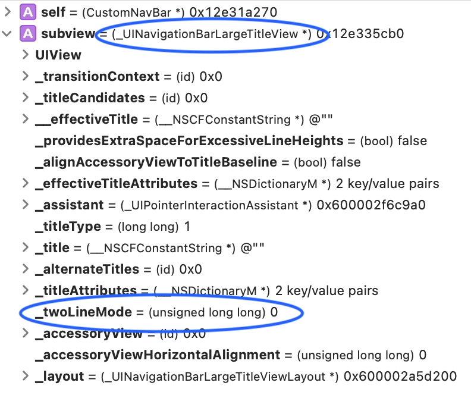
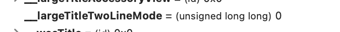
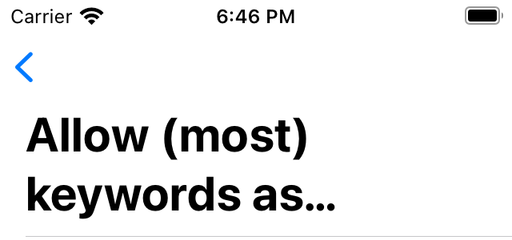

The hidden UINavigationBar property - large title two line mode
2020-12-28ToC
Background
Back in iOS 11, Apple introduced the Large Title feature, which became the usual UI for navigation bars. UIKit framework provides a simple way to enable the new shiny feature. But, there is a missing piece in the API: We can't make a Large title to have two lines of text (or do we?)
Community solutions
If Apple didn't add a way to make two lines large titles, developers made their way to solve the problem. On this stackoverflow page, there are multiple solutions, which don't work in iOS 15.
khurshedgulov asked in apple developer forums how to make large titles like Apple is doing in App Store app. Unfortunately, no one from Apple responded.
There are at least two apps from Apple that are using two lines for Large Titles: App Store, Watch.
Reverse engineering
I was confident that there should be a hidden way to enable this feature. Let's dig ⛏ inside UIKit
Based on the stackoverflow answers, the starting point was to look into the view structure of NavigationBar itself.
I created a subclass to NavigationBar and put a breakpoint in the function: didAddSubview. I inspected every subview coming as an input parameter to this function. From all subviews, one is named _UINavigationBarLargeTitleView (a private Apple class), and it has a private var named _twoLineMode with a value of 0 (turned off)!
Two Line Mode - it is there and I just needed a way to turn it on.

I tried this
subview.setValue(1, forKey: "_twoLineMode")
I tried to set the value in the didAddSubview and willAddSubview functions. None worked 😩, the value was reset somewhere after view was added as subview. After long inspecting and playing around with different variables of the _UINavigationBarLargeTitleView object, I couldn't make it work.
I needed to find which object is controlling the _twoLineMode var.
UINavigationBar is constructed using UINavigationItems. To inspect the item, I created a subclass to UINavigationController and overrode function navigationBar(_:shouldPush:) which is a function for UINavigationBar's delegate. After inspecting this object, I Found another clue! Another private var named __largeTitleTwoLineMode, again, with a value of 0.

I set this var to 1 or true and HERE IT IS!. I had a Large Title with two lines 🙌!
item.setValue(1, forKey: "__largeTitleTwoLineMode")
// OR
item.setValue(true, forKey: "__largeTitleTwoLineMode")

Demo project
I created a demo project named NavBarLargeTitle. The project will list Swift Language Evolution proposals inside the first UIViewController and details in the second. It target iOS 15 and uses some iOS 14 features for configuring the UITableView like cell configuration
The Solution
- Create a custom
UINavigationController - Add the protocol
UINavigationBarDelegateto the class definition - Override the function
navigationBar(_:shouldPush:) - Activate two lines mode using hidden variable
item.setValue(true, forKey: "__largeTitleTwoLineMode") - Make
navigationController.navigationBar.prefersLargeTitles = true
Notes
I haven't tested every possible way to set the hidden __largeTitleTwoLineMode variable, and possibly, variable could be set in any place before the item is added to the UINavigationBar
Green 🍀
Compatibility - the current solution works at least with iOS 15, 14, 13
Red 🐞
Animation - the interactive back animation is not perfect in the demo project, I haven't gone further to dig into this problem.
Unreliable - we can't rely on Apple's hidden API because it can break with any new release. But the good thing, is that current solution is so simple that it can easily be updated in such a scenario.